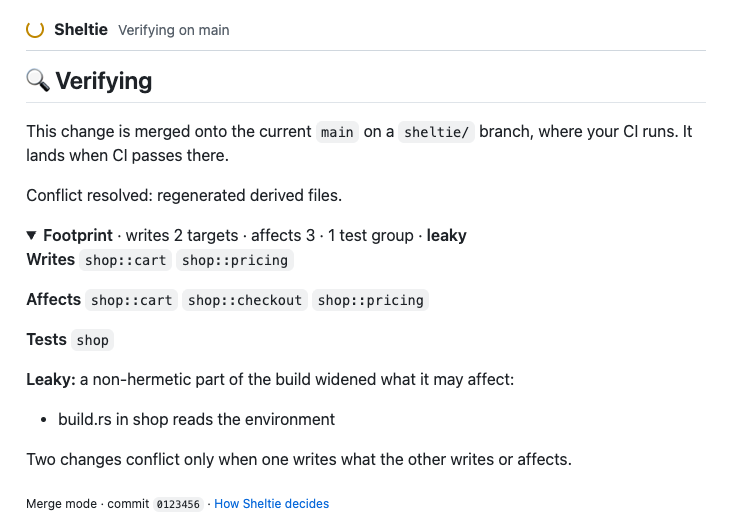

Merge agent pull requests in parallel.
Coding agents open more pull requests than a one-at-a-time merge queue can land. Sheltie knows what each one touches in your build, lands the independent ones together, and resolves conflicts before a person has to.
A GitHub App that runs next to your existing CI. Your builds, your runners, your keys.
It knows what every pull request touches
For every pull request an adapter computes a footprint: the build targets it writes, and the targets it affects through their interfaces. Two pull requests conflict only when one writes what the other writes or affects. Everything else can land together, safely.
Footprint
An adapter runs on your CI runner (Cargo today) and uploads what the change writes and affects.
Schedule
Each epoch, independent pull requests are grouped to land at once; overlapping ones are built speculatively or merged.
Commit
Sheltie checks nothing that landed meanwhile touches the change, then fast-forwards main. It never force-pushes.
Sweep
Full builds of main keep watch; a red commit is bisected and reverted automatically.
Conflicts, resolved in escalating tiers
When two pull requests do touch the same code, Sheltie tries progressively stronger resolutions on your runner, and verifies every result with your CI before it lands.
Structural merge
Merges by syntax tree with mergiraf, so two edits to the same file stop being a conflict.
Regenerate
Lockfiles and other derived files are regenerated, never hand-merged.
Declared rules
Set-like files are unioned and numbered migrations renumbered, as you declare in .sheltie/merge.toml.
Intent replay
Claude Code re-derives the change from its recorded intent, checked against its acceptance tests and the reviewed diff.
Where you already work: on the pull request
The Sheltie check tells you what happens next and why: what the change still needs, how it will land, which conflict tier resolved it, and exactly what it writes and affects.
- Start in shadow mode: Sheltie only predicts, and reports how often it would have been wrong.
- Switch a repository to merge mode when you trust it.
- Every landed commit says how it was proven safe.

The Sheltie check while a change is verified on the current main.
Agents that don't step on each other
Before work starts, Sheltie predicts which code an issue will touch and lets only one agent at a time work on issues that overlap. Agents ask over MCP; agents assigned on GitHub are held and released automatically.
Coordinating agents →# Give Claude Code access to Sheltie claude mcp add --transport http sheltie \ https://sheltie.example.com/mcp \ --header "Authorization: Bearer shl_…" # The agent then calls: safe_issues() → issues safe to start now claim_issue(12) → granted, or blocked by #9 predict_footprint(…) → targets it will touch
Yours to run
Sheltie is a small Rust service and Postgres. Builds, tests and agent jobs run on your CI runners with your API keys; the control plane only does set arithmetic and talks to GitHub.
- Docker Compose or Helm
- Your own GitHub App, registered with one script
- No telemetry. Apache-2.0.
# On a host with Docker and a public HTTPS name git clone https://github.com/softberries/sheltie cd sheltie scripts/register-github-app.py \ --url https://sheltie.example.com docker compose up -d --build # then add the footprint workflow to your repos
Let your agents ship in parallel
Install it next to your CI, watch it in shadow mode, and turn on merging when you trust what it predicts.